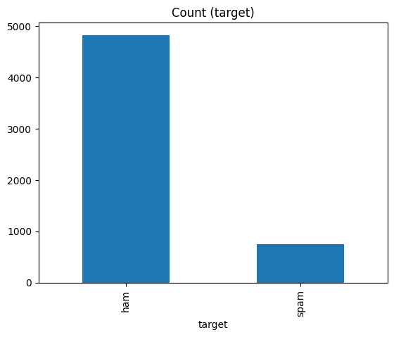

In this tutorial, we will build an Email Spam Classifier using Deep Learning techniques, specifically leveraging LSTM (Long Short-Term Memory) layers in Keras. LSTMs are a type of recurrent neural network (RNN) well-suited for sequential data, making them ideal for processing and classifying text data.
Our goal will be to create a model that can classify emails as spam or not spam based on the email content. We'll use several layers in Keras, such as Embedding, LSTM, Bidirectional, and Dropout to build and train our model.
Before diving in, make sure you have the following:
In this section, we will import all the necessary libraries and packages to build our email spam classifier. These libraries help with text preprocessing, data handling, model creation, and evaluation.
import re
import string
import numpy as np
import random
import pandas as pd
import os
import nltk
import spacy
import random
import matplotlib.pyplot as plt
%matplotlib inline
from collections import Counter
from sklearn.preprocessing import LabelEncoder
from sklearn.model_selection import train_test_split
from sklearn.feature_extraction.text import CountVectorizer
from sklearn.feature_extraction.text import TfidfTransformer
import nltk as nltk
from nltk.corpus import stopwords
from nltk.tokenize import word_tokenize
from spacy.util import compounding
from spacy.util import minibatch
import keras
from keras.models import Sequential
from keras.initializers import Constant
from keras.layers import (LSTM,
Embedding,
BatchNormalization,
Dense,
TimeDistributed,
Dropout,
Bidirectional,
Flatten,
GlobalMaxPool1D)
from keras.preprocessing.text import Tokenizer
from keras.preprocessing.sequence import pad_sequences
from keras.callbacks import ModelCheckpoint, ReduceLROnPlateau
from keras.optimizers import Adam
from sklearn.metrics import (
precision_score,
recall_score,
f1_score,
classification_report,
accuracy_score
)re and string: Regular expressions and
string manipulations, which are used to clean and preprocess text
data.numpy: Provides support for large, multi-dimensional
arrays and matrices, along with mathematical functions to operate on
them.random: For generating random sequences and shuffling
data.pandas: For data manipulation and analysis,
particularly useful for handling tabular data.os: Helps interact with the file system, useful when
loading datasets.nltk: The Natural Language Toolkit
provides various tools for text preprocessing, such as tokenization and
stopword removal.spacy: Another NLP library used for text processing,
tokenization, and lemmatization.matplotlib.pyplot: A plotting library for visualizing
data, such as loss/accuracy curves during model training.LabelEncoder: Converts categorical labels (like "spam"
and "not spam") into numeric form.train_test_split: Splits the dataset into training and
testing sets.CountVectorizer and TfidfTransformer:
Convert text documents into a matrix of token counts (bag of words) and
apply TF-IDF transformation, respectively.classification_report, precision_score,
recall_score, f1_score,
accuracy_score: These are various metrics used to evaluate
the performance of our classifier.With all the libraries loaded, you're ready to start preparing the data and building the deep learning model.
In this step, we will load the SMS Spam Collection Dataset, clean it, and get it ready for further processing. We will drop any unnecessary columns and rename the remaining ones for simplicity.
df = pd.read_csv("/kaggle/input/sms-spam-collection-dataset/spam.csv", encoding="latin-1")
df = df.dropna(how="any", axis=1)
df.columns = ['target', 'message']
df.head()| target | message | |
|---|---|---|
| 0 | ham | Go until jurong point, crazy.. Available only ... |
| 1 | ham | Ok lar... Joking wif u oni... |
| 2 | spam | Free entry in 2 a wkly comp to win FA Cup fina... |
| 3 | ham | U dun say so early hor... U c already then say... |
| 4 | ham | Nah I don't think he goes to usf, he lives aro... |
pd.read_csv(): This function loads the dataset from a
CSV file. The encoding="latin-1" parameter is used to
handle any special characters in the text (common when working with
email or SMS datasets).df.dropna(how="any", axis=1): This command removes any
columns with missing values. In this dataset, there are some irrelevant
columns that contain NaN values, so dropping them ensures
we only work with clean data.axis=1 parameter specifies that we are dropping
columns (rather than rows).df.columns = ['target', 'message']: We rename the
remaining columns to make them more intuitive. The
target column represents whether an SMS is
spam or not spam, and the
message column contains the actual SMS content.df.head(): This displays the first five rows of the
dataset, allowing us to verify that the data has been loaded and
processed correctly.In this step, we will add a new feature to the dataset, visualize the distribution of spam and non-spam messages, and understand the basic structure of the data.
df['message_len'] = df['message'].apply(lambda x: len(x.split(' ')))
new=df.groupby('target')['target'].value_counts()
new
new.plot(kind='bar',title='Count (target)')
df['message_len']: We create a new column called
message_len which calculates the number of words in each
message.apply(lambda x: len(x.split(' '))): For each message,
we split the text into individual words and count them. This provides an
additional feature (message length), which can be useful for
classification. For example, spam messages might tend to be longer or
shorter compared to non-spam messages.df.groupby('target')['target'].value_counts(): This
groups the data by the target column (spam
or ham) and counts the number of occurrences for each
class. This is a helpful way to check if the dataset is imbalanced.new.plot(kind='bar', title='Count (target)'): We use
matplotlib to create a bar plot that visualizes the
count of spam and non-spam
(ham) messages. The plot gives us a quick view of how
balanced or imbalanced the dataset is. If one class (say, spam) has far
fewer examples than the other, this could affect the model's
performance, and techniques like oversampling or undersampling might be
needed.In this step, we will further explore the dataset by analyzing the distribution of message lengths for both spam and non-spam (ham) messages. Additionally, we will download the stopwords from the NLTK library for future text preprocessing.
ham_df = df[df['target'] == 'ham']['message_len'].value_counts().sort_index()
spam_df = df[df['target'] == 'spam']['message_len'].value_counts().sort_index()
nltk.download('stopwords')Analyzing Ham Message Length:
ham_df = df[df['target'] == 'ham']['message_len'].value_counts().sort_index():
target column
equals 'ham'.value_counts(): This function counts how many messages
have the same length.sort_index(): After counting, we sort the values by
message length to understand the distribution more clearly.Analyzing Spam Message Length:
spam_df = df[df['target'] == 'spam']['message_len'].value_counts().sort_index():
Similar to the ham analysis, we filter for
spam messages and count their lengths. Sorting the
counts helps us compare message lengths between ham and spam.By comparing the two, you might observe differences in the distribution of message lengths between spam and non-spam messages, which could be an important feature in classification.
Downloading Stopwords:
nltk.download('stopwords'): This downloads a list of
common stopwords (e.g., "the", "is", "in", etc.) from the
NLTK library. These stopwords will be used in the next
step to remove unnecessary words that don’t contribute much to the
model’s decision-making process.In this step, we will define functions to clean, remove stopwords, and stem the text data. These preprocessing steps are crucial for standardizing the textual data before passing it to a machine learning or deep learning model.
def clean_text(text):
text = str(text).lower()
text = re.sub('\[.*?\]', '', text)
text = re.sub('https?://\S+|www\.\S+', '', text)
text = re.sub('<.*?>+', '', text)
text = re.sub('[%s]' % re.escape(string.punctuation), '', text)
text = re.sub('\n', '', text)
text = re.sub('\w*\d\w*', '', text)
return text
stop_words = stopwords.words('english')
more_stopwords = ['u', 'im', 'c']
stop_words = stop_words + more_stopwords
def remove_stopwords(text):
text = ' '.join(word for word in text.split(' ') if word not in stop_words)
return text
stemmer = nltk.SnowballStemmer("english")
def stemm_text(text):
text = ' '.join(stemmer.stem(word) for word in text.split(' '))
return textBy applying these functions, we ensure the dataset is clean and ready for the next steps in text vectorization and model building.
df['cleantxt'] = df['message'].apply(clean_text)
df['cleantxt'] = df['cleantxt'].apply(clean_text).apply(remove_stopwords)
df['cleantxt'] = df['cleantxt'].apply(stemm_text)
df.head()| target | message | cleantxt | |
|---|---|---|---|
| 0 | ham | Go until jurong point, crazy.. Available only ... | go jurong point crazi avail bugi n great world... |
| 1 | ham | Ok lar... Joking wif u oni... | ok lar joke wif oni |
| 2 | spam | Free entry in 2 a wkly comp to win FA Cup fina... | free entri wkli comp win fa cup final tkts m... |
| 3 | ham | U dun say so early hor... U c already then say... | dun say earli hor alreadi say |
| 4 | ham | Nah I don't think he goes to usf, he lives aro... | nah dont think goe usf live around though |
In this step, we will convert the categorical labels in the target column (i.e., 'spam' and 'ham') into numerical format. This is necessary for feeding the labels into the deep learning model, as most models work with numerical values rather than strings.
We will use LabelEncoder from the sklearn library to transform the labels.
labelencoder= LabelEncoder()
labelencoder.fit(df['target'])
df['target_num'] = labelencoder.transform(df['target'])
df.head()| target | message | cleantxt | target_num | |
|---|---|---|---|---|
| 0 | ham | Go until jurong point, crazy.. Available only ... | go jurong point crazi avail bugi n great world... | 0 |
| 1 | ham | Ok lar... Joking wif u oni... | ok lar joke wif oni | 0 |
| 2 | spam | Free entry in 2 a wkly comp to win FA Cup fina... | free entri wkli comp win fa cup final tkts m... | 1 |
| 3 | ham | U dun say so early hor... U c already then say... | dun say earli hor alreadi say | 0 |
| 4 | ham | Nah I don't think he goes to usf, he lives aro... | nah dont think goe usf live around though | 0 |
LabelEncoder() object and use it to
fit the target column, which contains the categorical
labels ('spam' and 'ham').transform() method converts the labels into
numerical values. For example, 'ham' might be encoded as 0
and 'spam' as 1.target_num to store the
transformed numerical labels, preserving the original
target column for reference.This step prepares the target labels for model training by converting
them into a format suitable for machine learning models. The
df.head() call will allow you to check the new column
target_num with the numerical values.
In this step, we will split the dataset into training and testing
sets. This is essential for evaluating the performance of the model on
unseen data. We will use the train_test_split function from
the sklearn library to achieve this.
X = df['cleantxt']
y= df['target_num']
X_train, X_test, y_train, y_test = train_test_split(X, y, random_state=40,test_size=0.2)In this step, we will vectorize the cleaned text data using the Tokenizer from Keras, and then we will prepare the deep learning model for classification.
from keras.preprocessing import sequence
max_words = 400
max_len = 150
tok = Tokenizer(num_words=400)
tok.fit_on_texts(X_train)
sequences = tok.texts_to_sequences(X_train)
sequences_train = sequence.pad_sequences(sequences,maxlen=150)
from keras.models import Model
from keras.layers import LSTM, Activation, Dense, Dropout, Input, Embedding
from keras.optimizers import RMSpropTokenizer
with a limit on the number of unique words (max_words). The
fit_on_texts() method builds the word index based on the
training data.texts_to_sequences() method converts each text in the
training set into a sequence of integers based on the word index.pad_sequences() function
pads the sequences to ensure that all inputs have the same length
(max_len), which is essential for feeding them into the
LSTM model.max_len.output_dim=128, meaning each word will be represented as a
128-dimensional vector.In this step, we will define a function to create the RNN model architecture. We will use the Embedding, LSTM, and Dense layers to build the model, followed by a sigmoid activation function for binary classification. After defining the model, we will compile it.
def RNN():
inputs = Input(name='inputs',shape=[max_len])
layer = Embedding(max_words,50,input_length=max_len)(inputs)
layer = LSTM(64)(layer)
layer = Dense(256,name='FC1')(layer)
layer = Activation('relu')(layer)
layer = Dropout(0.5)(layer)
layer = Dense(1,name='out_layer')(layer)
layer = Activation('sigmoid')(layer)
model = Model(inputs=inputs,outputs=layer)
return model
model = RNN()
model.summary()
model.compile(loss='binary_crossentropy',optimizer=RMSprop(),metrics=['accuracy'])RNN() function encapsulates the model architecture,
allowing for easy instantiation.max_len.The model.summary() call provides a detailed overview of
the model architecture, including the number of parameters at each
layer. With the model defined and compiled, we can now proceed to train
it using the training data.
In this step, we will train the RNN model using the training data. We will specify the batch size, number of epochs, and validation split, and we will also implement early stopping to prevent overfitting.
from keras.callbacks import EarlyStopping
model.fit(sequences_train,y_train,batch_size=128,epochs=10,
validation_split=0.2,callbacks=[EarlyStopping(monitor='val_loss',min_delta=0.005)])Epoch 1/10
28/28 [==============================] - 6s 160ms/step - loss: 0.4174 - accuracy: 0.8550 - val_loss: 0.2778 - val_accuracy: 0.8823
Epoch 2/10
28/28 [==============================] - 4s 143ms/step - loss: 0.2314 - accuracy: 0.9156 - val_loss: 0.1489 - val_accuracy: 0.9641
Epoch 3/10
28/28 [==============================] - 4s 145ms/step - loss: 0.1204 - accuracy: 0.9655 - val_loss: 0.0951 - val_accuracy: 0.9686
Epoch 4/10
28/28 [==============================] - 4s 142ms/step - loss: 0.0796 - accuracy: 0.9784 - val_loss: 0.0800 - val_accuracy: 0.9776
Epoch 5/10
28/28 [==============================] - 4s 143ms/step - loss: 0.0630 - accuracy: 0.9801 - val_loss: 0.0742 - val_accuracy: 0.9821
Epoch 6/10
28/28 [==============================] - 4s 142ms/step - loss: 0.0521 - accuracy: 0.9837 - val_loss: 0.0755 - val_accuracy: 0.9821
<keras.src.callbacks.History at 0x7a29d04573a0>fit() method on the model to start the
training process.sequences_train: This is the padded
sequence data used as input for training.y_train: The corresponding labels for
the training data.batch_size=128: The model will update
its weights after processing 128 samples at a time.epochs=10: The model will go through
the entire training dataset 10 times.validation_split=0.2: 20% of the
training data will be set aside for validation during training, allowing
us to monitor the model's performance on unseen data.callbacks: We include the
EarlyStopping callback, which will stop training if the
validation loss does not improve by at least 0.005 for a specified
number of epochs (the default patience is set to 10).This setup allows the model to learn from the training data while monitoring its performance on a validation set, helping to ensure that it generalizes well to unseen data. After training, we can evaluate the model's performance on the test set.
In this step, we will evaluate the performance of the trained RNN
model on the test data. This involves converting the test data into
sequences, padding them to the required length, and then using the
evaluate() method to get the model's accuracy and loss on
the test set.
test_sequences = tok.texts_to_sequences(X_test)
test_sequences_matrix = sequence.pad_sequences(test_sequences,maxlen=max_len)
accr = model.evaluate(test_sequences_matrix,y_test)35/35 [==============================] - 1s 18ms/step - loss: 0.0775 - accuracy: 0.9785
print('Test set\n Loss: {:0.2f}\n Accuracy: {:0.2f}'.format(accr[0],accr[1]))Test set
Loss: 0.08
Accuracy: 0.98
In this tutorial, we successfully built an RNN model using Keras to classify SMS messages as either spam or ham. Through a series of steps, we:
After training, the model achieved an impressive accuracy of 98% with a loss of 0.08 on the test set. This demonstrates the effectiveness of using deep learning techniques for text classification tasks.
With such high accuracy, the model is well-suited for real-world applications in spam detection, providing a robust solution to filter unwanted messages. Future improvements could involve experimenting with different architectures, hyperparameter tuning, or incorporating additional features to further enhance performance.
Thank you for following along, and we hope this tutorial has been informative and helpful in your journey to mastering deep learning for text classification!